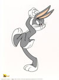
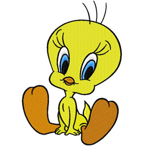
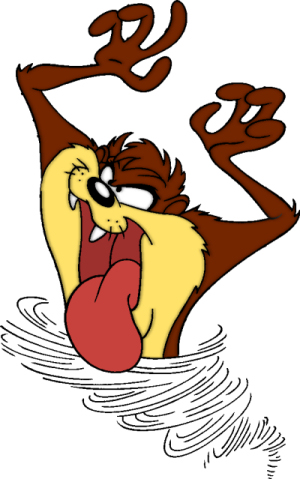

Home | About | Characters | Gallery
 Bugs Bunny, adalah sebuah karakter dari seri kartun Looney Tunes, yang berasal dari Amerika Serikat. Bugs Bunny menggambarkan seekor kelinci yang memiliki akal yang banyak dan tidak gampang putus-asa. Tetapi ia juga digambarkan jahil dan suka mengerjain orang lain. Tetapi hal ini tidak akan dilakukannya tanpa diusik terlebih dahulu.
 Tweety menggambarkan seekor burung kenari kuning yang tinggal di sangkar dan merupakan peliharaan dari Granny. Waktu diluar sangkar, Tweety harus berhadapan dengan Sylvester. Karakter ini selalu untung saat dijaga oleh Hector yang tinggal di tempat Granny.
 Taz-Mania adalah salah satu karakter pada Looney Tunes, Taz (Tasmanian Devil) di daratan fiksi Tazmania (berdasarkan pada Tasmania). Tidak seperti kartun serupa pada waktunya, tayangan ini sering merusak dinding keempat, dan sering membuat lelucon. Dia iseng dan Sering bertingkah laku yang aneh-aneh.